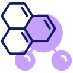

Mundo da Química

Experimentos
Descubra a Química na Prática!Coloque a mão na massa com experimentos simples e seguros que revelam o lado divertido da química! Aprenda enquanto cria reações incríveis no conforto da sua casa ou escola.
Programação
A conexão entre química e tecnologia!Sabia que química e programação andam juntas? Com softwares avançados, cientistas simulam reações químicas, criam novos materiais e ajudam no desenvolvimento de medicamentos. Explore como essas áreas se conectam e inspire-se para inovar!


Venha Conhecer
Tabela Periódica
A chave para entender o universo da matéria!Explore a tabela periódica de forma interativa e aprenda sobre os elementos que compõem tudo ao nosso redor. Descubra como os químicos organizaram essas informações essenciais para decifrar os segredos da natureza.
Ligações
A união que cria o mundo ao nosso redor!Entenda como os átomos se conectam para formar substâncias incríveis. De ligações iônicas a covalentes, descubra como essas forças invisíveis moldam materiais, alimentos e até o ar que respiramos!
Experimentos
Descubra a magia da química com experimentos fáceis e seguros! Aqui você encontrará atividades práticas que mostram como os conceitos químicos acontecem na vida real. Prepare-se para se divertir enquanto aprende!
Química na programação
-
Programas são usados para simular reações químicas, prever propriedades de moléculas e desenvolver novos materiais.
-
Exemplo: Softwares como Gaussian e ChemDraw são essenciais para químicos modelarem compostos e interações.
-
É uma área onde programação é usada para resolver problemas químicos, como entender reações e propriedades químicas usando cálculos computacionais.
-
Linguagens como Python, C++ e R são amplamente utilizadas para criar modelos e scripts que analisam dados químicos.
-
Armazenamento e consulta de informações químicas em sistemas como PubChem ou ChemSpider, que exigem habilidades de desenvolvimento para organizar e buscar dados complexos.
- 1. Simulações e Modelagem Molecular
- 2. Química Computacional
- 3. Desenvolvimento de Bancos de Dados Químicos
-
Aplicados para prever propriedades de novos compostos, otimizar reações químicas ou até encontrar moléculas para medicamentos.
-
Exemplo: Modelos treinados com Python ajudam na descoberta de fármacos.
-
Softwares e aplicativos que ensinam química (simuladores de laboratório, visualizadores de moléculas 3D).
-
Exemplo: Sites interativos que explicam ligações químicas ou criam representações atômicas.
-
A química ajuda a desenvolver novos materiais para impressão 3D, enquanto a programação controla as máquinas e os processos.
- 4. Inteligência Artificial e Machine Learning
- 5. Desenvolvimento de Ferramentas Educacionais
- 6. Impressão 3D e Engenharia de Materiais
Tabela Periódica
A Tabela Periódica é uma organização sistemática dos elementos químicos, agrupados de acordo com suas propriedades e características. Criada por Dmitri Mendeleev em 1869, ela organiza os elementos em linhas, chamadas períodos, e colunas, chamadas grupos, facilitando a visualização de padrões e tendências entre eles. Na tabela, os elementos são dispostos por ordem crescente de número atômico (quantidade de prótons) e divididos em diferentes categorias, como metais, ametais e gases nobres. Ela é uma ferramenta essencial para o estudo da química, pois permite prever comportamentos químicos, reatividade e a formação de compostos.
Ligações Químicas
-
Ligações Iônicas: Ocorrem entre metais e não-metais. Nessa ligação, um átomo doa elétrons e o outro os recebe, formando íons. Esses íons, com cargas opostas, se atraem fortemente.
-
Exemplo: O cloreto de sódio (sal de cozinha) é formado por átomos de sódio (que doa um elétron) e cloro (que recebe esse elétron), criando uma ligação iônica.
-
-
Ligações Covalentes: Ocorrem entre átomos que compartilham elétrons, formando moléculas estáveis. Normalmente acontecem entre não-metais.
-
Exemplo: Na molécula de água (H₂O), o oxigênio compartilha elétrons com dois átomos de hidrogênio, formando uma ligação covalente.
-
1. Ligações Iônicas e Covalentes
Os átomos se unem para formar substâncias por meio de ligações químicas. Existem dois tipos principais:
-
Ligações de Hidrogênio: Uma força forte que ocorre entre moléculas que contêm hidrogênio ligado a elementos altamente eletronegativos, como oxigênio, nitrogênio ou flúor. Essas ligações são responsáveis por características como a alta coesão da água, o que permite que as gotas se mantenham juntas.
-
Forças de Van der Waals: Forças fracas que ocorrem entre todas as moléculas, mas são mais fortes em moléculas grandes e polares. Essas forças são responsáveis, por exemplo, pela atração entre as moléculas de gases em temperaturas mais baixas.
2. Forças Intermoleculares
As forças intermoleculares são forças de atração ou repulsão que ocorrem entre moléculas. Elas influenciam propriedades como o ponto de ebulição e a solubilidade das substâncias.
Exemplo Interessante: As ligações de hidrogênio são o que mantém as moléculas de DNA juntas na famosa "dupla hélice". Já as forças de Van der Waals ajudam a manter certas substâncias em estado líquido ou gasoso, como o oxigênio no ar.